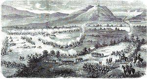
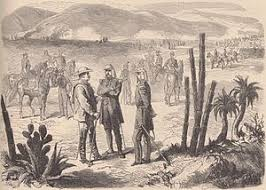
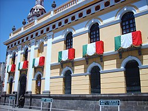
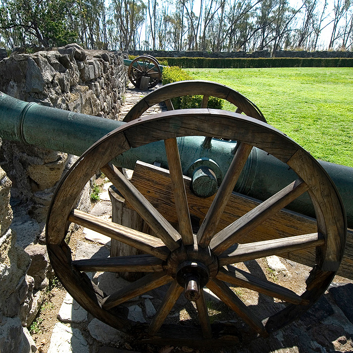

LA BATALLA DE PUEBLA

Atlixco tiene una larga historia de contribuciones a la construcción de éste país y este Estado de Puebla.
Desde la etapa de colonización hispana, fue un lugar privilegiado y codiciado. Sus condiciones de fertilidad, abundancia de agua y mano de obra, propiciaron una gran riqueza agrícola basada en el cultivo del trigo, por lo que fue considerada como “el primer granero de la Nueva España”. Su importancia económica ha sido plasmada en diversos testimonios de aquella época recogidos en el libro “Antigua Villa de Carrión”, de la autoría de Marco Díaz.
Su participación en la causa de la Independencia, -donde destacan José Luis Rodríguez de Alconedo y Francisco Pablo Vázquez- le otorgaron, de parte del General Nicolás Bravo en 1843 la denominación de “Noble y Leal Ciudad de Atlixco”.
El esfuerzo de construcción de nuestro país, pasa por una serie de invasiones. Por ello habrá que recordar también, la defensa que hizo Atlixco en contra de los españoles que intentaban reconquistar a México en 1825; y la intervención que tuvo en 1914 durante la invasión estadounidense en el gobierno de Victoriano Huerta.
La llegada de la industria textil en Atlixco implicó para la región un cambio favorecedor en el estilo de vida; sin embargo, ésta época de desarrollo textil en el valle de Atlixco coincide con el movimiento revolucionario. La influencia del movimiento de Emiliano Zapata en pro de de la tierra, sumó a un gran número de trabajadores inconformes y líderes de esta lucha revolucionaria de la región como Fortino Ayaquica y Domingo y Cirilo Arenas, que trataron de hacer insurrección en las fábricas textiles, hechos violentos que sucedieron entre 1911 y 1917 en la fábrica textil de Metepec. Incluso, el historiador Jeffrey Bortz, sostiene que los trabajadores de la industria textil del corredor fabril México, Tlaxcala y Atlixco, Puebla, aportaron las principales reivindicaciones laborales que quedaron plasmadas en la Constitución de 1917.
Una distinción que enorgullece a los atliscenses fue la Declaratoria mediante la cual Atlixco fue nombrada por Decreto del Congreso del Estado en el año de 1998 “Heroica Ciudad de Atlixco” por la defensa que dieron en contra del ejército norteamericano en 1848, y el reconocimiento al batallón “Libres de Atlixco” comandado por el general Joaquín Rea, que enfrentaron en un ataque desigual, contra de una población indefensa demostrando el gran valor de los atliscenses.
"4 DE MAYO DE 1862" - Sabersinfin.com - 5 de mayo de 2013, A:Rocío García Olmedo
Antes del 5 de Mayo, el día 28 de abril de 1862, tuvo lugar un enfrentamiento conocido como la Batalla de las Cumbres entre el Ejército Expedicionario Francés y el Ejército Mexicano. En este conflicto hubo cerca de 500 bajas francesas en contra de apenas 50 bajas mexicanas.
El 2 de mayo parte el Ejército Expedicionario Francés desde San Agustín del Palmar en Veracruz con rumbo a cruzar la Sierra Madre Oriental y dirigirse hacia Puebla, era paso obligado para llegar a la capital mexicana.
Otros generales mexicanos también participaron en la defensa de Puebla como es el caso de las tropas de Oaxaca dirigidas por Porfirio Díaz. El centro de la línea lo defendió Francisco Lamadrid con las tropas del Estado de México y San Luis Potosí. La izquierda se apoyó en el cerro de Acueyametepec, ubicado en el norte de la ciudad, y en cuya cumbre están los Fuertes de Loreto y Guadalupe, con el general Miguel Negrete a la cabeza de la Segunda División de Infantería.
El 5 de mayo, a las 9 de la manana, aparecen los franceses en el horizonte, pero es hasta las 11 de la manana cuando comienzan las hostilidades, anunciándose con un cañonazo desde el Fuerte de Guadalupe y acompañado por los repiques de las campanas de la ciudad. El conde de Lorencez ordena una maniobra sorpresiva que divide a la columna francesa en dos; eran 4,000 hombres marchando para atacar los Fuertes de Loreto y Guadalupe. El 6o. Batallón de la Guardia Nacional del Estado de Puebla, bajo el mando del coronel Juan Nepomuceno Méndez, fue el primer cuerpo del Ejército de Oriente en hacer frente a los franceses y rechazar el ataque.
Varios embates franceses fueron repelidos por la resistencia del Ejército Mexicano como es el caso de los zuavos (originarios de Argelia), el regimiento de élite de la infantería francesa, quienes iniciaron un cauteloso ascenso hacia el Fuerte de Guadalupe, pero fueron recibidos con bayonetas y obligados lo franceses a retroceder. A las 2h30 de la tarde, cuando los mexicanos empezaban a vislumbrar la victoria, Lorencez se dispuso a lanzar el último asalto, dirigiendo a los Cazadores de Vincennes y el Regimiento de Zuavos hacia Guadalupe. Zaragoza dispuso que el Batallón Reforma de San Luis Potosí saliera en auxilio de los fuertes. Luego de ser repelidos por última vez, las fuerzas del Ejército Expedicionario Francés comenzaron a huir completamente dispersados. Se replegaron a la hacienda Los Álamos, para finalmente retirarse hacia Amozoc.
El día 5 de mayo de 1862, tras una de las más duras batallas de la historia, la cual duró desde el amanecer a la tarde, los franceses terminaron por retirarse. El saldo fue de más de 500 bajas en las líneas francesas contra apenas unas 100 en las mexicanas.

Éste hecho se convirtió en un fuerte símbolo de la resistencia y del poder mexicano, representando justamente una victoria simbólica contra los grandes imperios.
"La historia de la batalla de Puebla" - DIAS FESTIVOS EN MEXICO A: Desconocido
En mayo de 1861, el presidente Benito Juárez anunció la suspensión de los pagos de deuda la mexicana. Como consecuencia, los acreedores que eran Francia, Inglaterra y España firmaron la conocida Convención de Londres por la cual se comprometían enviar contingentes militares hacia el territorio mexicano con el fin hacer valer los derechos como acreedores.
En diciembre del mismo año, llegaron al puerto de Veracruz los primeros militares mientras que en enero de 1862 arribaron las tropas inglesas y francesas. Una vez en el país, los representantes de los tres países acreedores enviaron un ultimátum al gobierno de México exigiéndole el pago de las deudas ya que de lo contrario invadirían el país. Juárez, al ver que la invasión era un riesgo evidente, solicitó negociar para llegar a un acuerdo amistoso al tiempo que derogó el decreto que llevó a los países acreedores a iniciar acciones militares. El presidente Juárez viendo la posibilidad de una invasión militar a la Ciudad de México ordenó la fortificación de Puebla al mismo tiempo que creó una nueva unidad militar conocida como Ejército de Oriente. Esta en un principio estuvo bajo las órdenes de José López Uraga pero debido a su mal desempeño el mando recayó en las manos del hasta entonces Ministro de Guerra, Zaragoza. Él tuvo la tarea de organizar las fuerzas, que sumaban unos 10.000 hombres, para repeler el ataque del ejército francés.
Los representantes de los países acreedores aceptaron la propuesta de negociación y en febrero de 1862 se reunieron con los ministros Manuel Doblado (Mtro. De Exterior) e Ignacio Zaragoza (Mtro. de Guerra). La reunión se llevó a cabo en la hacienda La Soledad muy próxima a Veracruz. Esta negociación derivó en la firma de los Tratados preliminares de La Soledad mediante los cuales España, Francia e Inglaterra se comprometían a reconocer la independencia del país. En cuanto a la deuda, se aceptó que las negociaciones se realizasen en Orizaba, Córdoba y Tehuacán. En caso de no llegar a un acuerdo, se comenzarían las campañas militares desde las costas.

En lapida de Mármol se puede leer grabado: “Decreto del 5 de Diciembre de 1864.Por los servicios prestados a la patria, cuyos hijos defendieron la libertad contra la intervencion francesa 1862 – 1867. Espedido por el general y gobernador Fernando Ma. Ortega. La quema de sus hogares el 4 de agosto de 1865 habla de valor y heroismo, participes en la revolución mexicana de 1910 como lampara vitiva a su recuerdo”.
Los fuertes de Loreto y Guadalupe son unas antiguas edificaciones militares que se encuentran en la ciudad de Puebla. Originalmente se trataba de capillas construidas en lo alto de un cerro Acueyametepec, que fueron reconstituidas a principios del siglo XIX como fortificaciones con finalidades militares. Sirvieron como escenario principal tanto en la batalla como en el sitio de Puebla, durante la Segunda Intervención Francesa en México. Declarados como patrimonio histórico de México, actualmente albergan museos de sitio.
Puebla fue un punto clave para la historia del país, por lo que este museo interactivo revive de forma didáctica la batalla del 5 de Mayo de 1862 en la zona de Los Fuertes, el mismo escenario donde se desarrollaron estos hechos. El interactivo narra las acciones militares y contiene las biografías de héroes nacionales como Ignacio Zaragoza, a través de pantallas táctiles, proyecciones en 3-D y contenidos interactivos descargables en dispositivos. Este espacio está dotado de tres salas que detallan la riqueza histórica de Puebla, que te transportan a los lugares donde la batalla se llevó a cabo.
Las instalaciones que ocupan el Museo y Biblioteca General Ignacio Zaragoza datan del siglo XVIII, ya que la orden de los hermanos bethlemitas llegados a México en 1674 procedentes de Guatemala adquirieron del conde Paredes de Nava, entonces virrey de México, el predio en el cual construirían el Hospital, que estaría destinado a la atención de enfermos e indigentes que serían atendidos por los integrantes de la orden, siendo el fundador del hospicio fray Francisco del Rosario. El predio adquirido poseía una cantera de la que se tomó la mayor parte de la piedra para la construcción del hospital y de la iglesia. Las obras se iniciaron el 5 de julio de 1692 y se concluyeron a principios del año de 1700. Al momento de emitirse las Leyes de Reforma, quedaron clausuradas todas las instalaciones de esta orden hospitalaria. Para 1861 el inmueble albergaba a una fábrica de cerillos. En el año de 1886 el edificio fue ocupado por el Seminario Palafoxiano, mismo que fue reinaugurado en 1907 como Universidad Católica, que fue nuevamente clausurada en 1914 por causa de la revolución carrancista. En 1927 el general Plutarco Elias Calles, presidente de la República y el general Joaquin Amaro, secretario de Guerra y Marina, iniciaron los trabajos de reconstrucción para albergar en este edificio la Comandancia General de la 34.ª Zona Militar. Después de un proceso de restauración ordenado por la Secretaría de la Defensa Nacional, respetando la arquitectura y detalles históricos de la construcción, el inmueble se recuperó para ser designado sede del Museo y Biblioteca "General Ignacio Zaragoza".

El Fuerte Loreto fue el escenario de la batalla del 5 de mayo de 1862 entre los ejércitos mexicano y francés. El recinto se ha destacado por difundir el nacionalismo, la identidad y el orgullo mexicanos. Contiene una colección de objetos históricos del siglo XIX, entre los que se encuentran armas, banderas, documentos, óleos, artículos personales y vestimenta militar. Destacan las cartas del presidente Benito Juárez al general Zaragoza, relacionadas con la batalla, así como las pinturas de los generales.

El Museo Interactivo de la Batalla del 5 de Mayo, se ha convertido en una de las atracciones más populares en Puebla. Montado con elementos de vanguardia y la mejor tecnología de punta, este es el lugar ideal para rememorar este evento histórico. El sitio, al que se permite acceso a personas de todas las edades, turistas y poblanos; se encuentra dividido en tres áreas principales: la recepción, la sala de acciones militares y la sala de héroes y biografías. Esto sin contar su amplio estacionamiento, un auditorio que yace al aire libre y preciosos jardines con puente peatonal.